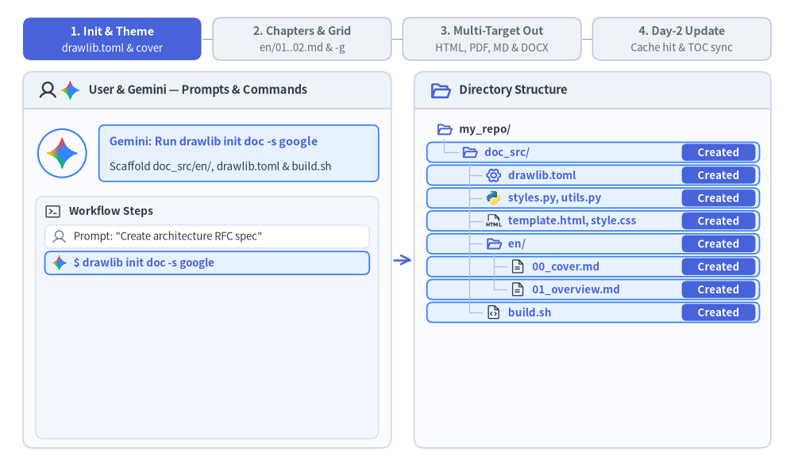

Linear Document Project Guide (drawlib init doc)
The doc starter template is designed for authoring linear technical documents — such as specifications, Request for Comments (RFCs), system architecture proposals, whitepapers, thesis papers, and formal engineering reports.
By unifying single-page specs and multi-chapter reports into a single archetype, Drawlib allows you to compile HTML, vector PDF, editable MS Word (.docx), Markdown, and standalone images from the same Markdown source files.

Source Code
from drawlib.canvas import save, setup
from drawlib.icons import phosphor
from drawlib.lines import line
from drawlib.shapes import rectangle
from drawlib.styles import Styles
from drawlib.text import text
setup(width=128, height=58)
# Left Container: doc_src/ Lexicographical Source Chapters
rectangle((19, 29), width=30, height=50, style=Styles.MutedDashed.patch(shape_r=2.0))
phosphor.files((8.5, 50.2), width=4.2, style=Styles.PrimaryBold)
text((21.5, 50.2), "doc_src/<lang>/", style=Styles.DarkBold.patch(text_size=10.8))
src_chapters = [
(40.0, "00_cover.md\n(1st Chapter)"),
(27.0, "01_overview.md\n(2nd Chapter)"),
(14.0, "02_design.md\n(3rd Chapter)"),
]
for sy, label in src_chapters:
rectangle(
(19, sy),
width=26,
height=10.0,
style=Styles.Neutral.patch(shape_r=1.5),
text=label,
text_style=Styles.DarkBold.patch(text_size=10.2),
)
# Center Container: Merged Linear Document Stream (--page-break)
rectangle((64, 29), width=42, height=50, style=Styles.MutedDashed.patch(shape_r=2.0))
phosphor.list_numbers((47.5, 50.2), width=4.4, style=Styles.PrimaryBold)
text((66.5, 50.2), "Merged Stream", style=Styles.DarkBold.patch(text_size=10.8))
rectangle(
(64, 42.2),
width=37,
height=7.8,
style=Styles.PrimaryNeutral.patch(shape_r=1.2),
text="1. 00_cover.md (Cover)",
text_style=Styles.DarkBold.patch(text_size=10.2),
)
rectangle(
(64, 32.0),
width=37,
height=8.5,
style=Styles.PrimaryFlat.patch(shape_r=1.2),
text="Auto TOC (Ch 1 -> Ch 2)\n--toc / --generate-index",
text_style=Styles.WhiteBold.patch(text_size=10.0),
)
rectangle(
(64, 21.8),
width=37,
height=7.8,
style=Styles.Neutral.patch(shape_r=1.2),
text="2. 01_overview.md",
text_style=Styles.DarkBold.patch(text_size=10.2),
)
rectangle(
(64, 12.0),
width=37,
height=7.8,
style=Styles.Neutral.patch(shape_r=1.2),
text="3. 02_design.md",
text_style=Styles.DarkBold.patch(text_size=10.2),
)
# Arrows: Source -> Merged Stream
line((32, 40.0), (45.5, 42.2), arrow_head="->", style=Styles.DarkBold)
line((32, 27.0), (45.5, 21.8), arrow_head="->", style=Styles.DarkBold)
line((32, 14.0), (45.5, 12.0), arrow_head="->", style=Styles.DarkBold)
# Right: Exported Linear Deliverables
rectangle((109, 44.5), width=30, height=13.5, style=Styles.SecondaryNeutral.patch(shape_r=1.5))
phosphor.file_pdf((99.0, 44.5), width=4.6, style=Styles.PrimaryBold)
text((112.5, 44.5), "doc_<lang>.pdf\nVector PDF", style=Styles.DarkBold.patch(text_size=10.0))
rectangle((109, 29.0), width=30, height=13.5, style=Styles.Neutral.patch(shape_r=1.5))
phosphor.file_doc((99.0, 29.0), width=4.6, style=Styles.PrimaryBold)
text((112.5, 29.0), "doc_<lang>.docx\nMS Word", style=Styles.DarkBold.patch(text_size=10.0))
rectangle((109, 13.5), width=30, height=13.5, style=Styles.PrimaryNeutral.patch(shape_r=1.5))
phosphor.globe((99.0, 13.5), width=4.6, style=Styles.PrimaryBold)
text((112.5, 13.5), "doc_html/<lang>/\nWeb Spec", style=Styles.DarkBold.patch(text_size=10.0))
# Connectors: Merged Stream -> Deliverables
line((85, 29.0), (89.5, 29.0), style=Styles.DarkBold)
line((89.5, 13.5), (89.5, 44.5), style=Styles.DarkBold)
line((89.5, 44.5), (94.0, 44.5), arrow_head="->", style=Styles.DarkBold)
line((89.5, 29.0), (94.0, 29.0), arrow_head="->", style=Styles.DarkBold)
line((89.5, 13.5), (94.0, 13.5), arrow_head="->", style=Styles.DarkBold)
save()
1. End-to-End Project Workflow
A doc project walks through four phases: scaffold doc_src/ and configure shared theme/cover metadata, author numbered Markdown chapters verified with -g grid previews, compile multi-target deliverables (HTML, vector PDF, Markdown, plus optional on-demand MS Word .docx), and perform incremental Day-2 updates backed by .drawlib/cache.db.

2. Project Initialization
Scaffold a linear document project using drawlib init (every doc project uses the unified <src_dir>/<lang>/ locale layout, even for a single language):
# Scaffold standard doc project in current directory (creates 'doc_src/en/'):
drawlib init doc
# With custom target name, theme, and single or multiple locales (creates 'my_report_src/<lang>/'):
drawlib init doc my_report -s google -l en
drawlib init doc my_report -s google -l en,ja
3. Directory Layout & Anatomy
Editable Source Directory (doc_src/)
drawlib.toml: Project manifest declaringtype = "doc",style, and the required[i18n]section (default_lang,langswithlen >= 1, and optional[i18n.labels];langunder[project]is disallowed).<lang>/(en/00_cover.md,en/01_overview.md,en/02_design.md, ...): Locale chapter directories containing numbered Markdown chapter files with prose and embeddeddrawlibblocks, merged in sorted lexicographical order per locale.styles.py&utils.py: Shared Python styling configuration (Colors,Styles, language fonts; plus optional per-locale<lang>/styles.pyoverrides) and reusable diagram helper functions.template.html&style.css: Jinja2 single-page HTML layout and print-aware CSS (@media print/@page A4) for browser preview and vector PDF generation._assets/: Static logos, raster screenshots, or custom.ttffonts (referenced from Markdown prose in<lang>/via../_assets/...).build.sh& Target Scripts: Master orchestrator (build.sh) alongside modular scripts (build_html.sh,build_pdf.sh,build_docx.sh,build_markdown.sh,build_image.sh, andserve.sh).
Generated Output Artifacts
doc_html/: Merged single-page HTML document per locale (doc_html/<lang>/index.html, plus root redirectdoc_html/index.htmland shareddoc_html/images/) for fast browser preview and internal web hosting.doc_<lang>.pdf(e.g.doc_en.pdf): Print-ready A4 vector PDF per locale rendered via headless Chromium with cover page, localized Table of Contents (--toc), and chapter page breaks (--page-break).doc_<lang>.docx(e.g.doc_en.docx, On-Demand): Native editable Microsoft Word document per locale exported viabuild_docx.sh(drawlib build docx) with cover page, localized Table of Contents (--generate-index), and high-DPI PNG figures.doc_markdown/: GitHub-ready Markdown chapters per locale (doc_markdown/<lang>/) referencing shared../images/assets.doc_images/: Extracted standalone diagram images organized per chapter.
Note (
No navbar.mdindocProjects): Never create anavbar.mdfile insidedoc_src/ordoc_src/<lang>/. Drawlib usestype = "doc"and the absence ofnavbar.mdto compile each locale directory as a merged linear document rather than a multi-page sidebar site. Files prefixed with_(such as_outline.md) andREADME.mdare automatically excluded from compilation.
4. Five Target Outputs from One Source
A doc project compiles into 5 distinct target artifacts:
| Output Target | Target Audience | Primary Use Case | Build Script / Command |
|---|---|---|---|
doc_html/ |
Web Browsers | Fast local preview (<lang>/index.html), web publishing, internal documentation wikis |
build_html.sh |
doc_<lang>.pdf |
Print & Distribution | Formal whitepapers, client deliverables, printable reports with localized Table of Contents | build_pdf.sh |
doc_<lang>.docx |
Collaborative Editing & Review | Native editable MS Word documents per locale (headings, lists, tables, syntax-highlighted code blocks, cover + TOC, high-DPI PNG diagrams) | build_docx.sh (drawlib build docx) |
doc_markdown/ |
GitHub & Version Control | Direct viewing in GitHub/GitLab repositories (<lang>/*.md) with rendered image links |
build_markdown.sh |
doc_images/ |
Presentations & Messaging | Drag-and-drop into Google Slides, Keynote, PowerPoint, Slack, or PRs | build_image.sh |
5. Chapter Ordering, Cover Page & Table of Contents Mechanics
Because a doc project does not use a navbar.md sidebar file, Drawlib merges all .md files in each doc_src/<lang>/ directory (excluding README.md and _-prefixed files) into a single linear document for doc_html/<lang>/index.html, doc_<lang>.pdf, and doc_<lang>.docx:
- Lexicographical Chapter Sorting: Name your chapter files with numeric prefixes (
00_cover.md,01_overview.md,02_design.md,03_benchmarks.md) inside<lang>/so they are merged in deterministic reading order. - Cover Page Convention (
00_cover.md): The first file in sorted order acts as the document cover page. When--toc(--generate-index) is passed todrawlib build pdfor--generate-indexis passed todrawlib build docx, the automated Table of Contents is inserted cleanly between the 1st document (00_cover.md) and the 2nd document (01_overview.md). - Chapter Page Breaks (
--page-break): By default in both PDF and Word (.docx) compilation (--page-break), each merged.mdfile begins on a new page. Pass--no-page-breakif you prefer continuous flow without forced page breaks between files.
6. Modular Build Scripts Architecture
Each project contains specialized scripts alongside a master orchestrator:
build_html.sh: Compiles and merges Markdown chapters per locale into standalone HTML documents (doc_html/<lang>/index.html+ rootdoc_html/index.htmlredirect). Extremely fast for local verification.build_pdf.sh: Renders each locale's merged document into an A4 vector PDF (doc_<lang>.pdf) via headless Chromium (page.pdf()). Supports automatic localized Table of Contents (--toc) and clean chapter page breaks (--page-break).build_docx.sh(On-Demand): Exports each locale's merged chapters into a native editable Microsoft Word document (doc_<lang>.docx) with cover page, localized Table of Contents (--generate-index), and high-DPI PNG figures. Pre-scaffolded with+xpermissions; run on demand (./doc_src/build_docx.sh).build_markdown.sh: Converts inlinedrawlibblocks into standard Markdown image tags indoc_markdown/<lang>/pointing to shared rendered diagrams indoc_markdown/images/.build_image.sh: Scans all Markdown files, extracts embeddeddrawlibblocks, and renders them cleanly intodoc_images/without risk of name collisions.build.sh(Master Script): Runs the standard target builds (HTML, PDF, Markdown, Images) in sequence to produce release artifacts quickly.
7. Direct CLI Commands (Including MS Word .docx)
You can run any build target—including native MS Word (.docx) export—directly from the terminal (passing -o doc.pdf or -o doc.docx on a doc_src/ project automatically emits per-locale <base>_<lang>.pdf / <base>_<lang>.docx, such as doc_en.pdf and doc_en.docx):
# 1. Compile to HTML (emits doc_html/<lang>/index.html + root redirect):
drawlib build html doc_src/ -o doc_html/
# 2. Compile to PDF with Cover and Table of Contents (emits doc_<lang>.pdf):
drawlib build pdf doc_src/ -o doc.pdf --toc --page-break
# 3. Compile to editable MS Word (.docx) with Cover, TOC, and 200 DPI PNGs (emits doc_<lang>.docx):
drawlib build docx doc_src/ -o doc.docx --generate-index --page-break --dpi 200
# 4. Compile to GitHub-ready Markdown (emits doc_markdown/<lang>/):
drawlib build markdown doc_src/ -o doc_markdown/
# 5. Extract diagram images from Markdown:
drawlib build image doc_src/ -o doc_images/
8. Parallel Multi-Agent Chapter Authoring
Because a doc project separates chapters into numbered Markdown files (<lang>/00_cover.md, <lang>/01_overview.md, <lang>/02_architecture.md, <lang>/03_security.md, etc.), AI coding agents can author multi-chapter whitepapers and specifications in parallel:
- Phase 1 (Parent Setup): Scaffold
doc_src/(drawlib init doc), finalizedrawlib.toml,styles.py,utils.py, and<lang>/00_cover.md, and establish the numbered chapter filenames. - Phase 2 (Parallel Subagents): Delegate individual chapters (
doc_src/<lang>/0N_<topic>.md) to parallel subagents. Each subagent authors its assigned chapter (2+diagrams, Chapter Hero atLines 5–15) and verifies its diagrams with unique grid preview paths (-o .drawlib/scratch/0N_<diagram>_grid.png). - Phase 3 (Unified Compilation): After all subagents complete their chapters, the parent agent runs
./doc_src/build.sh(anddrawlib build docxwhen needed) once to merge all chapters intodoc_html/<lang>/index.html,doc_<lang>.pdf, anddoc_<lang>.docx.
9. Unified i18n & Multi-Language Linear Documents (drawlib.toml)
Every doc_src/ project is i18n-native out of the box (langs = ["en"] by default). Adding a second language edition later requires zero git mv file moves or build-script changes—simply pass comma-separated locales at init time or append a locale directory (doc_src/ja/) and update [i18n] in doc_src/drawlib.toml:
uv run drawlib init doc whitepaper -l en,ja -s google
[project]
name = "whitepaper"
type = "doc"
style = "google"
[i18n]
default_lang = "en"
langs = ["en", "ja"]
[i18n.labels]
en = "English"
ja = "日本語"
- Symmetric Locale Chapter Directories (
doc_src/<lang>/): Place numbered chapter files (00_cover.md,01_overview.md, ...) inside each locale directory (doc_src/en/,doc_src/ja/). Pre-flight checks verify chapter file-set parity, Markdown structural skeleton parity, and relative link integrity across all locales. - Per-Locale
styles.py& Shared Figure Deduplication: Language-neutral diagrams (file=fig_pipeline.png) use rootdoc_src/styles.pyand render once into sharedimages/. For localized figures requiring CJK typography, placedoc_src/<lang>/styles.py(for exampleja/styles.pywithFontJapanese) and assign a locale-specific filename (file=fig_pipeline_ja.png). - Consistent Locale-Suffixed PDF & MS Word Deliverables (
<base>_<lang>.pdf/.docx): Whetherlangshas 1 locale (["en"]->whitepaper_en.pdf) or multiple locales (["en", "ja"]->whitepaper_en.pdf,whitepaper_ja.pdf),drawlib build pdfanddrawlib build docxemit<base>_<lang>.pdfand<base>_<lang>.docxwith localized Table of Contents headings ("Table of Contents","目次", etc.). - Print-Safe HTML Language Switcher: When
len(langs) > 1, merged HTML previews (whitepaper_html/<lang>/index.html) render a top-right language dropdown for instant browser switching while@media printhides the toolbar cleanly during vector PDF generation. - Synchronized GitHub Markdown (
whitepaper_markdown/<lang>/):build_markdown.shoutputs per-locale Markdown chapters referencing shared../images/assets without duplicating raster files.